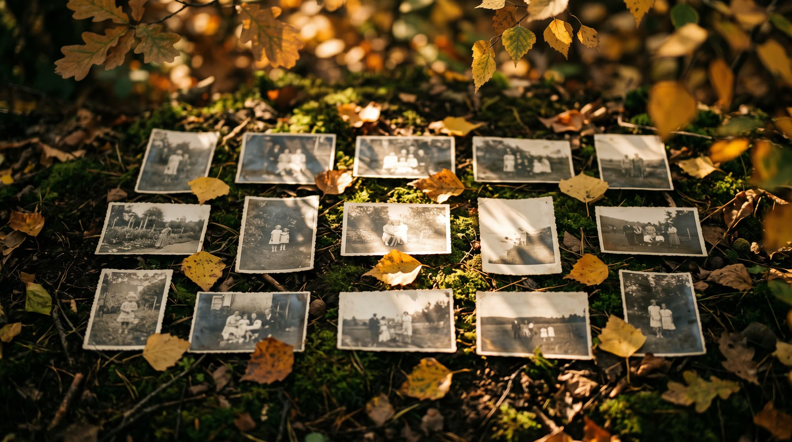
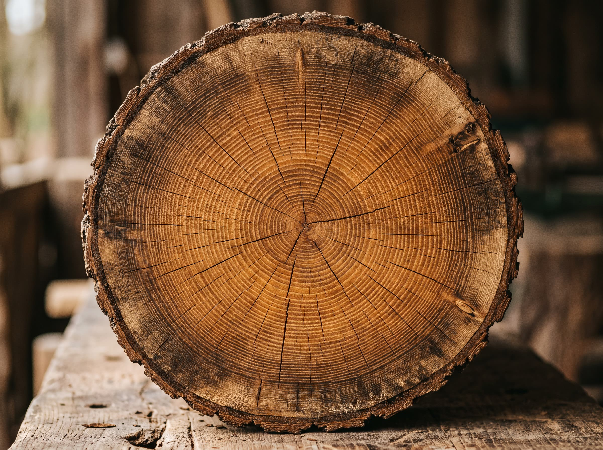
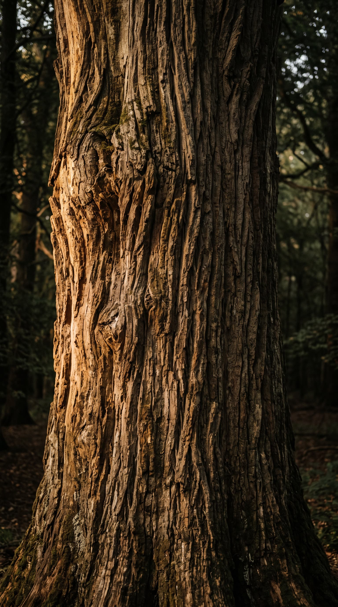
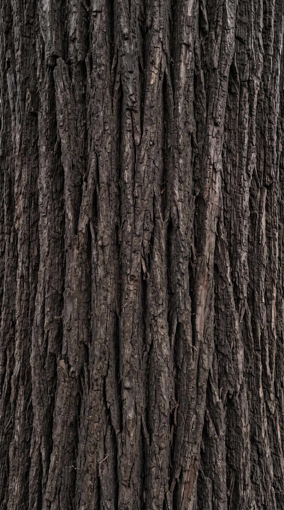
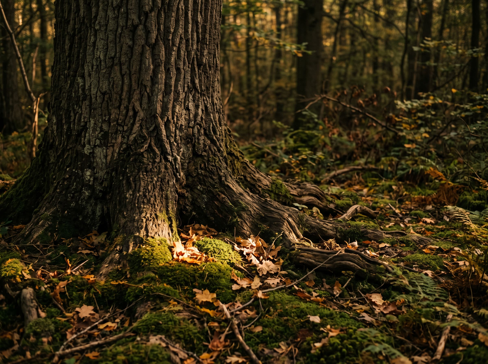
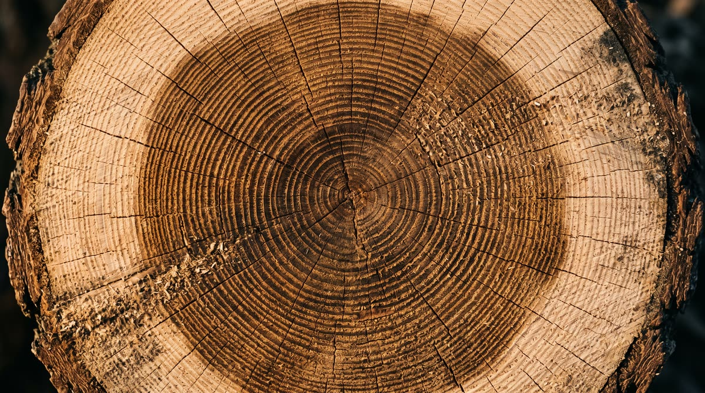
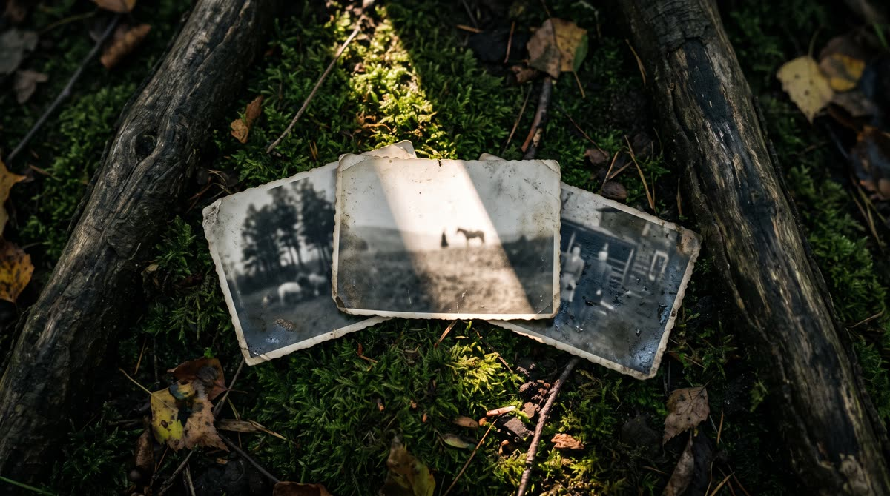
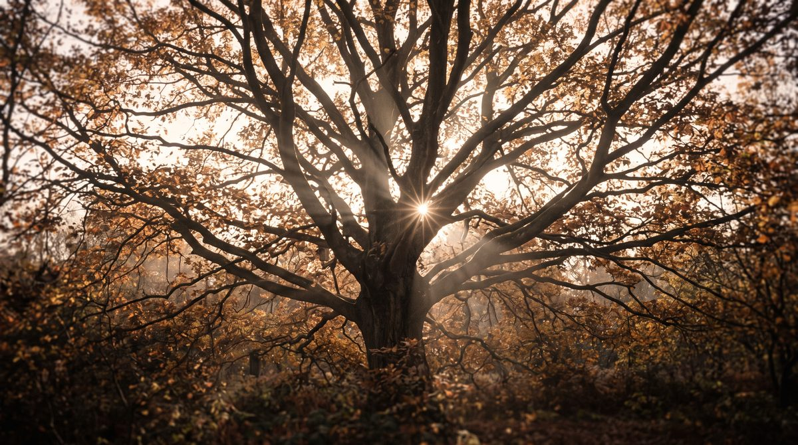
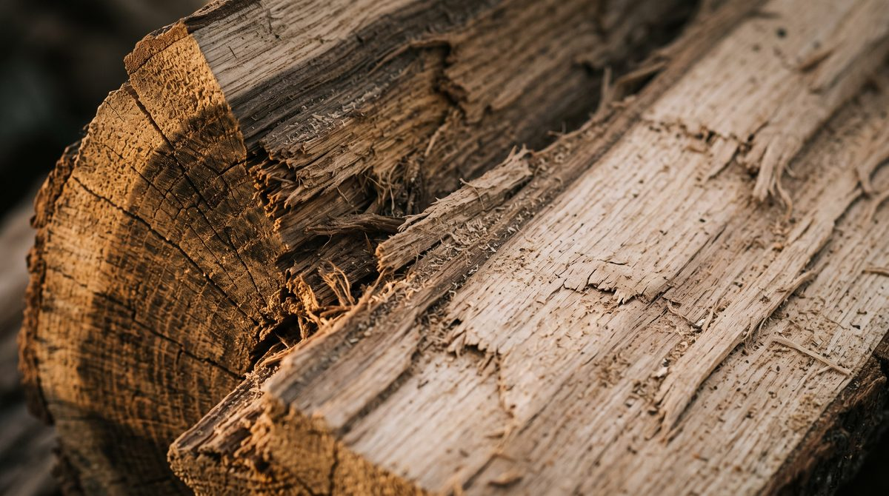
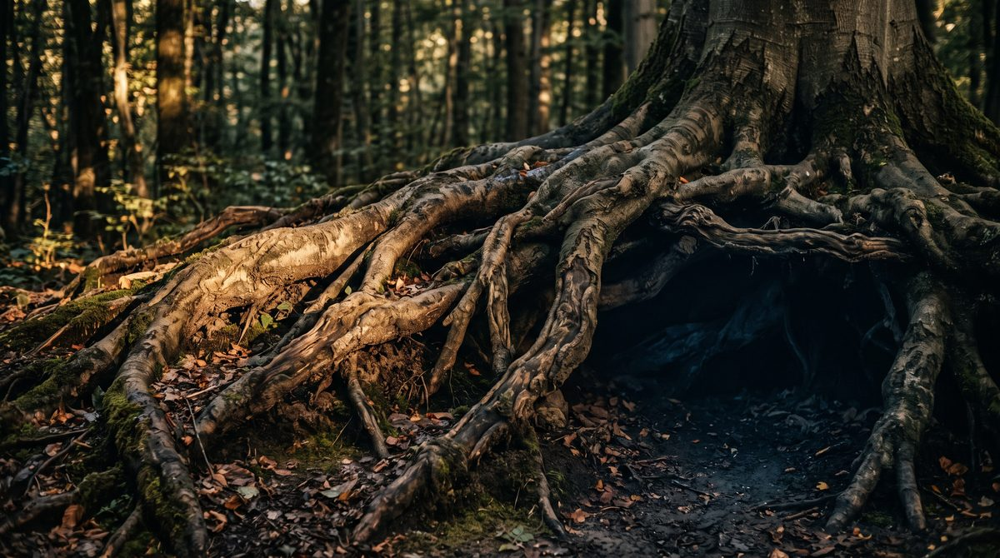

Память семьи растёт деревом
Наверху - свет и лица, которые мы ещё помним. Внизу, у корней, - те, от кого остался один выцветший снимок. Спуститесь по стволу, и мы расскажем, как с ними обращаемся.
От целой жизни остаётся горсть снимков
Свадьба, проводы, двор, где все ещё живы. Обычно это десяток кадров в конверте, и с каждым переездом их становится меньше.
Мы работаем с копией. Бумажный оригинал остаётся дома, у вас - его никуда не нужно отправлять.

Лицо остаётся собой
Это единственное правило, ради которого мы готовы отдать снимок позже. Мы не подменяем черты и не делаем из бабушки чужого человека с ровной кожей.
Если участок утрачен настолько, что честно его прочитать нельзя, мы оставляем его как есть и говорим об этом прямо.


Чего мы не делаем
Там, где бумага утрачена, мы не дорисовываем то, чего никто не видел.
Ни новых черт, ни выправленных лиц. Человек на снимке должен остаться узнаваемым для своих.
Три шага - и снимок в работе
Приём заявок открыт прямо сейчас. Дальше всё происходит на нашей стороне: настраивать вам ничего не нужно.
Снимок
Сфотографируйте оригинал целиком при дневном свете, без вспышки и бликов. Скан подойдёт тоже.
Разбор
Смотрим, что с бумагой: сгибы, потери, царапины, выцветание. Говорим честно, что получится, а что уже утрачено.
Бережная работа
Идём шаг за шагом, сверяясь с лицом на оригинале. Спорные места оставляем как есть, а не додумываем.

Мы не обещаем мгновенного чуда
Работа с семейным снимком - это часы внимания. Поэтому мы говорим о сроках прямо и не прячем текущее состояние сервиса.
Заявки принимаем сегодня. Место в очереди закрепляется за вами в порядке записи.
Сейчас мы держим паузу на выдаче, чтобы не отдавать работу второпях. Как только она снимется, вы узнаете первыми.
Мы работаем только с копией. Бумажный снимок никуда не уезжает и остаётся дома.
Одно место, где всё лежит вместе
Снимки перестают жить в трёх телефонах и одной коробке на антресоли. Каждый кадр получает своё место, дату и имя - то, что помните вы, а не то, что придумала машина.
Что подписать нечем - остаётся без подписи. Пустая строка честнее выдуманного года.

Дерево ведёт учёт без описи
Спил не подписан ни одним словом, но в нём по порядку лежат все годы: узкие, широкие, сухие, щедрые. Эту летопись никто не вёл специально - она получилась сама, пока дерево росло.
Семейный архив устроен так же. Он не подписан, но в нём всё лежит по порядку - надо только уметь читать.

Три карточки на мху
Три снимка из разных десятилетий, положенные рядом. Разная бумага, разный формат, разная степень выцветания - и одна семья, которую они держат вместе.
Мы начинаем с одного кадра. Остальные ждут своей очереди столько, сколько нужно.

Свет приходит сверху и сквозь
Крона не держит свет у себя - она его пропускает. Между ветвями остаются просветы, и день доходит до самой земли, только мягче и теплее, чем был наверху.
Со снимком мы делаем то же самое: не добавляем яркости, а убираем то, что мешает свету пройти сквозь бумагу.

Под корой лежит живой слой
На сколе видно, что дерево не однородное: снаружи сухая кора, глубже - светлая заболонь, по которой шла вода, и только потом плотная сердцевина. Разломить легко, собрать обратно нельзя.
Старая фотография устроена так же послойно: бумага, эмульсия, изображение. Поэтому мы работаем с копией и не трогаем сам отпечаток.

Сначала снимки просто перебирают руками
До любой работы кто-то садится за стол и раскладывает стопку по одной карточке: где залом, где выцвел край, где бумага уже крошится. Это самая медленная часть и самая важная.
Разбор - наша часть работы, а не ваша. Раскладывать по годам перед тем, как написать, не нужно.
Корни держат больше, чем видно
Над землёй - ствол и крона, под ней - сеть, которая шире всего дерева. Её никто не разглядывает, но именно она не даёт упасть в первую же бурю.
Семейный архив тоже держится тем, что не на виду: подписями на обороте, датами, чужими именами, которые пока некому объяснить.

Вы дошли до корней
Здесь заканчивается ствол и начинается то, что держит всё дерево. Оставьте одному снимку место в очереди - и начнём спокойно, с одного кадра.
Занять место в листе ожидания